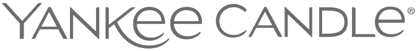

양키캔들 Yankee Candle
양키캔들(Yankee Candle)은 1969년 미국에서 시작된 향초 제조·소매 브랜드이다.
최종 업데이트

양키캔들은 어떤 브랜드인가
양키캔들(Yankee Candle)은 1969년 미국 매사추세츠에서 출발한 향초 브랜드다. 당시 16세였던 마이클 키트리지(Michael Kittredge)가 녹인 크레용으로 어머니 선물용 첫 향초를 만든 것이 시작이었다.
유리 자(jar)에 담긴 향초가 대표 형태로 굳어지며 미국 최대 규모의 수제 향초 회사로 성장했고, 현재는 종합 소비재 기업 뉴웰브랜즈(Newell Brands) 산하의 가정용 방향(芳香) 브랜드로 운영된다. 발삼앤시더 같은 시즌 향과 대형 자 캔들로 북미 가정 시장에서 오랜 인지도를 쌓아 왔다.
양키캔들은 어떻게 봐야 할까
향초 시장의 핵심 경쟁 구도는 양키캔들과 배스앤바디웍스(Bath & Body Works)의 양강 구도로 요약된다. 시장 분석에서 양키캔들, 배스앤바디웍스, 조말론 등 상위 브랜드가 전체의 절반 안팎을 점유하는데, 배스앤바디웍스가 시즌·한정판 컬렉션과 매장 체험으로 고객을 끌어들인다면, 양키캔들은 두꺼운 유리 자에 담긴 대용량 향초와 긴 연소 시간을 무기로 삼는다.
특히 '자(jar) 캔들'이라는 형식 자체를 대중에게 각인시킨 대명사적 위치가 차별점이며, 발삼앤시더·클린코튼 등 시그니처 향이 재구매를 이끈다. 뉴웰브랜즈 산하라는 점은 안정적 유통망과 동시에 모기업 전체 실적 부진의 영향을 함께 받는다는 양면성을 뜻한다.
한국에서는 백화점·온라인·면세 채널을 통해 선물용 향초로 인지되어, 계절감 있는 향과 인테리어 소품 수요와 맞물려 소비된다.
양키캔들은 어떻게 시작되고 성장했나
시작은 1969년 크리스마스였다. 매사추세츠 홀리오크 출신의 16세 소년 마이클 키트리지는 어머니 선물을 살 형편이 못 되자 크레용을 녹여 집에서 첫 향초를 직접 만들었다.
이웃들이 구매를 원하면서 그는 생산량을 늘렸고, 초기 '캔들 바이 마이클 키트리지'라는 이름을 거쳐 '더 양키 캔들 컴퍼니'로 정식화했다. 고교 친구들의 도움으로 사업 기반을 다진 뒤, 부모의 요청에 따라 제조·창고 시설을 홀리오크의 버려진 방직 공장으로 옮겨 규모를 키웠다.
이후 대형 소매와 사우스디어필드 플래그십(양키캔들 빌리지)을 통해 미국 최대 수제 향초 회사로 자리 잡았다. 1998년 키트리지는 약 4억 달러에 투자사에 회사를 매각했고, 2013년에는 자든(Jarden)이 약 17억 5천만 달러에 인수했다.
자든이 2016년 뉴웰 러버메이드와 합병하면서 양키캔들은 최종적으로 뉴웰브랜즈 산하로 편입되었다.
양키캔들의 브랜드 아이덴티티는 무엇인가
브랜드 정체성의 중심에는 '향으로 채우는 집'이라는 가정적 가치가 있다. 시각적으로는 두꺼운 투명 유리 자에 부착된 직사각형 라벨, 향 이름을 큼직하게 적은 클래식한 서체와 무늬가 핵심 식별 요소로, 라벨 자체가 로고처럼 기능한다.
주요 타깃은 집 안 분위기와 계절감을 향으로 연출하려는 가정 소비자와 선물 구매층이다. 브랜드 보이스는 화려함보다 친근하고 따뜻한 생활 밀착형 어조를 유지하며, 발삼앤시더 같은 향 이름과 계절 컬렉션으로 정서적 연상을 전달한다.
창업 일화에서 비롯된 손으로 만든 진정성의 서사가 정체성의 바탕에 깔려 있다.
양키캔들의 대표 제품과 서비스는 무엇인가
대표 품목은 대형 유리 자에 담긴 오리지널 자 캔들로, 22온스 클래식은 110시간 이상 연소된다. 이 밖에 시그니처 텀블러와 3심지 캔들, 왁스 워머와 함께 쓰는 향 왁스멜트, 미니 봉헌초, 차량용 방향제, 룸 스프레이, 벽면 플러그인 등으로 구성된다.
시그니처 향으로는 발삼앤시더, 클린코튼 등이 꼽힌다. 가격대는 미디엄 자가 20달러대 중반 수준이며, 자사몰·대형 마트·온라인·면세 등 폭넓은 채널로 판매된다.
양키캔들은 지금 어떤 상태인가
현재 양키캔들은 애틀랜타에 본사를 둔 뉴웰브랜즈 산하 브랜드다. 양키캔들 단독 매출은 별도 공개되지 않아 미공개이며, 모기업의 가정용 방향 부문 분기 매출은 약 1억 3천6백만 달러로 전년 대비 17% 감소했다.
2026년 1월부터 북미 매장 약 20곳을 닫고 글로벌 인력 900여 명을 줄이는 구조조정이 진행되지만, 사우스디어필드 플래그십과 웨이틀리 공장 운영은 유지된다.
양키캔들 연혁 — 주요 사건은 언제였나
양키캔들 로고는 어떻게 변해왔나
대표 로고대표 브랜드 마크
BI/CI 아카이브보관 이미지 2자주 묻는 질문
양키캔들는 어느 나라 브랜드인가요?
양키캔들는 미국의 홈·라이프스타일 브랜드입니다.
양키캔들는 언제 설립되었나요?
양키캔들는 1969년 설립되었습니다.
양키캔들의 브랜드 아이덴티티는 무엇인가요?
브랜드 정체성의 중심에는 '향으로 채우는 집'이라는 가정적 가치가 있다.
양키캔들의 대표 제품은 무엇인가요?
대표 품목은 대형 유리 자에 담긴 오리지널 자 캔들로, 22온스 클래식은 110시간 이상 연소된다.
양키캔들는 어느 기업이 소유하고 있나요?
현재 양키캔들은 애틀랜타에 본사를 둔 뉴웰브랜즈 산하 브랜드다.
양키캔들의 본사는 어디에 있나요?
양키캔들의 본사는 South Deerfield에 있습니다(위키데이터 기준).
양키캔들의 공식 웹사이트는 어디인가요?
양키캔들의 공식 웹사이트는 https://www.yankeecandle.com/ 입니다.
출처와 검증
양키캔들 관련 참고: 공식 웹사이트 · 위키데이터 Q8048733 · 영어 위키백과. 브랜드명은 한글과 원어를 함께 표기하되 데이터에 없는 표기는 만들지 않습니다. 기원 국가·설립연도는 검수된 정의문에서 확인된 값을 우선하고, 없을 때만 공식 웹사이트 URL이 일치하는 위키데이터 개체의 값을 씁니다. 위키데이터 값은 2026-09-07 기준입니다.